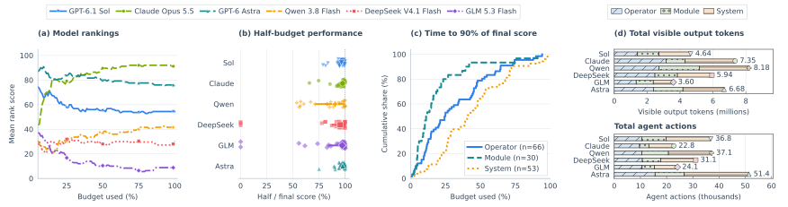

Analysis
Long and short optimization runs, rankings over time, late gains, and agent activity.
Long Horizon vs. Short Horizon
Longer horizons are more effective for module and system tasks, while short-horizon TTS (test-time scaling) remains competitive on operators. Best-of-four (T/4) achieves 102.6% of long-run performance on operators, 96.9% on modules, and 77.3% on systems. Best-of-two (T/2) follows the same pattern.
Long-horizon optimization (T) wins nine of 12 task–model comparisons, including all four system comparisons.
Loading optimization trajectories…


Rankings, late gains, and interaction counts
How results change over the budget

Model rankings over time
Astra leads at 25% of the budget with a mean rank score of 84.0 versus Claude’s 79.2. Claude leads at 50%, with 89.6 versus Astra’s 80.0. All six models keep the same overall order at the later evaluated fractions.
Individual task winners can still change: at halfway, three tasks have leaders different from their final winners; at 75%, two tasks still do.
Performance gains in the second half
Best-so-far scores improve after halfway in 135 of 150 runs (90.0%).
Among runs with a positive first-half score, the median later gain is 3.05%; 33 runs improve by more than 10%.
System runs reach 90% of their final performance at a median of 40.8% of the budget, compared with 24.6% for operators and 11.5% for modules.
Statistics
Best scores start at zero. The second-half gain count includes runs whose first scored submission arrives after halfway.
The time to reach 90% of final performance is computed for runs with positive final scores.
Visible output tokens and actions
The 150 runs produce 36.39 million visible output tokens and 203,266 actions.
Among Qwen, DeepSeek, and GLM, the model with the most visible output tokens has the highest final score on 15 of 25 tasks; the model with the most actions does so on 12.
| Model | Visible output tokens |
|---|---|
| Qwen 3.8 Flash | 8.18 million |
| DeepSeek V4.1 Flash | 5.94 million |
| GLM 5.3 Flash | 3.60 million |
On K-grouped FP8 Wgrad, GLM takes 1,715 actions versus Qwen’s 884, but reaches 118.15 versus 295.57 TFLOP/s.
Token and action definitions
Visible tokens use o200k_base for agent text and tool-call content. Tool responses, repeated code-diff displays, and hidden reasoning are excluded.
An action is one emitted text block or tool invocation.